タンパガロの墓/Tampagallo
タンパガロはスアヤからさらに南にある農村だ。
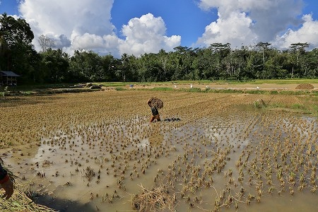
水田の広がる景色の中にこんもりとした山が現れる。
その中に墓があるのだ。
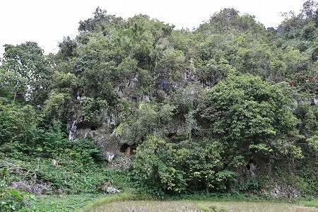
メインの墓の向かいの岩壁にも穴が開いている。
恐らくココもまた墓なのだろう。
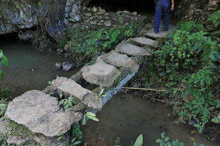
墓に行くのには石橋を渡っていく。小さな川だが少しスリリングだ。
タンパガロの墓は洞窟の中にある。
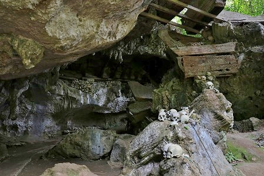
洞窟、といっても浅い岩陰のようなところなので、比較的明るい。
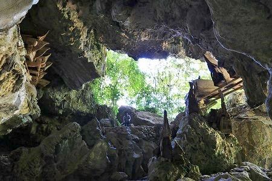
したがってこれまで訪れた洞窟墓に比べて空気もカラッとしている印象だ。
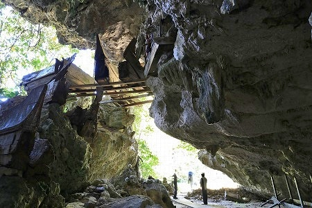
遥か頭上に棺桶が浮かんでいた。
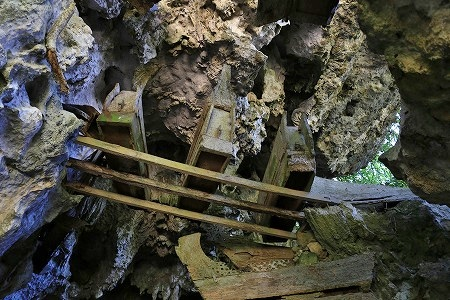
棒を渡し、その上に棺桶を安置してあるのだ。
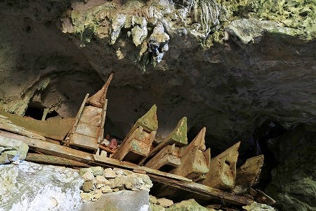
遺体を天に少しでも近づけるため、あちこちで涙ぐましい努力をしている。
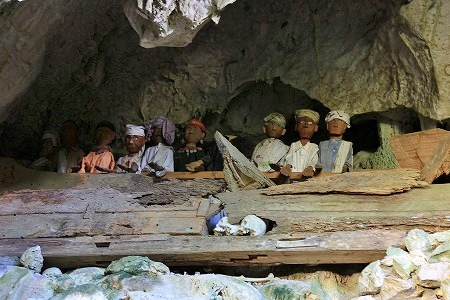
洞窟の上の方にはタウタウ人形も並んでいた。
近年のリアルなタイプでなく、オーソドックスなスタイルのタウタウ人形だ。
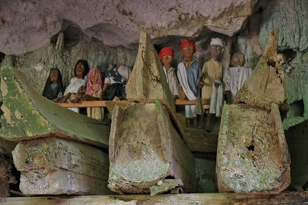
岩陰にあるため劣化が少ない。
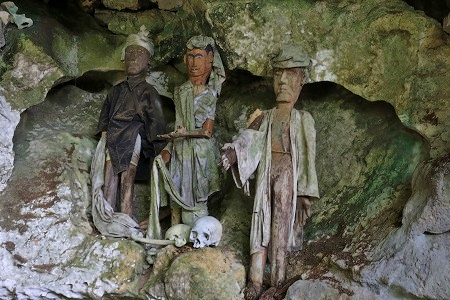
一方、やや日当たりのいい場所のタウタウ人形は劣化が進んでいる。
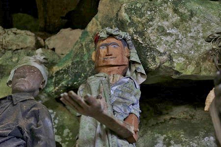
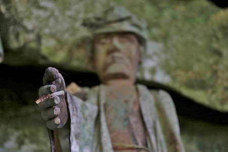
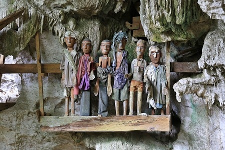
何だか人形劇の人形みたいだ。
ここの墓はたまに観光客が訪れるようだが、特に入場料金を請求されるわけでもなく、ローカルな雰囲気だった。
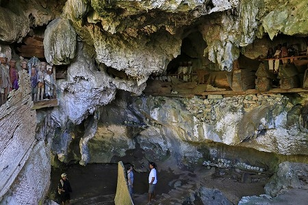
思いの外、立体的で複雑な洞窟だった。
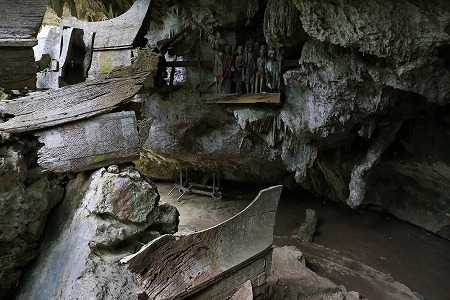
だからこうして上の方まで棺桶を持ち上げられるのだが。
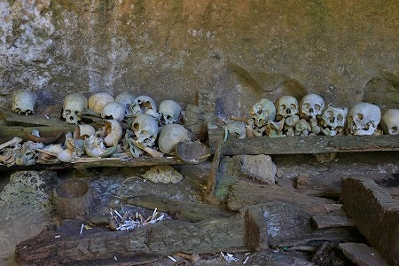
地面にはびっしりと頭蓋骨が並んでいる。
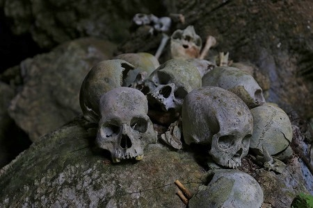
トラジャに来て1週間。
最早、人骨は何一つ珍しくない存在になっている。
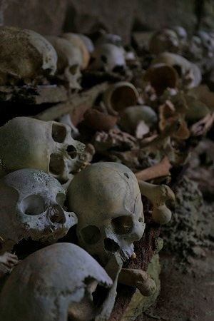
トラジャでは死と生は対立概念ではなく
ゆったりとした時間軸の中で共生している存在なのだ。
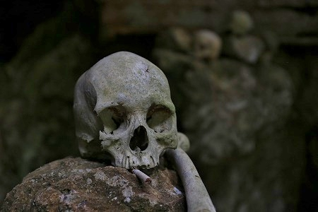
だから煙草も吸うんだな。
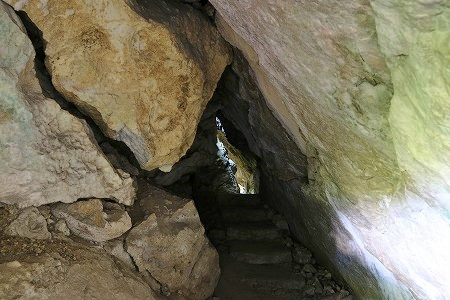
洞窟のさらに奥に狭い隙間があった。
抜け出てみると、そこもまた水田の広がるエリアだった。
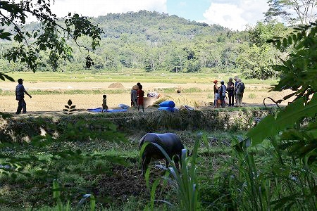
水牛と農民がのんびり歩いていた。
まったりしてますなあ。
次へＧＯ！